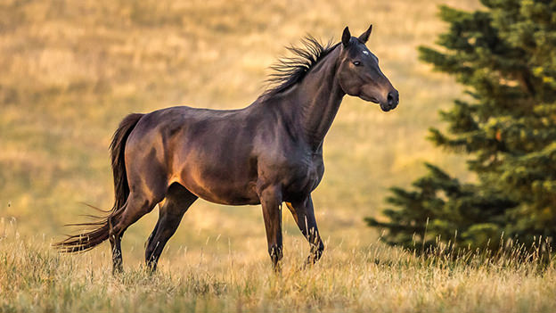
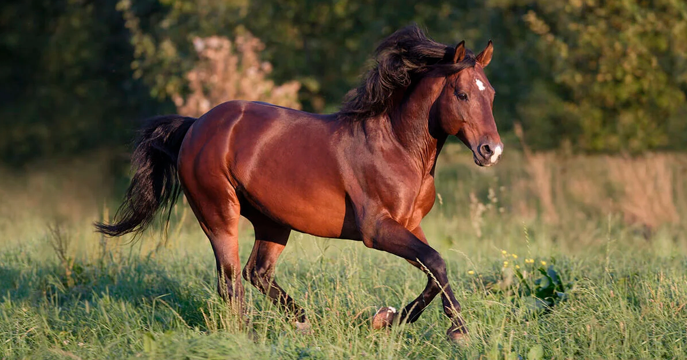
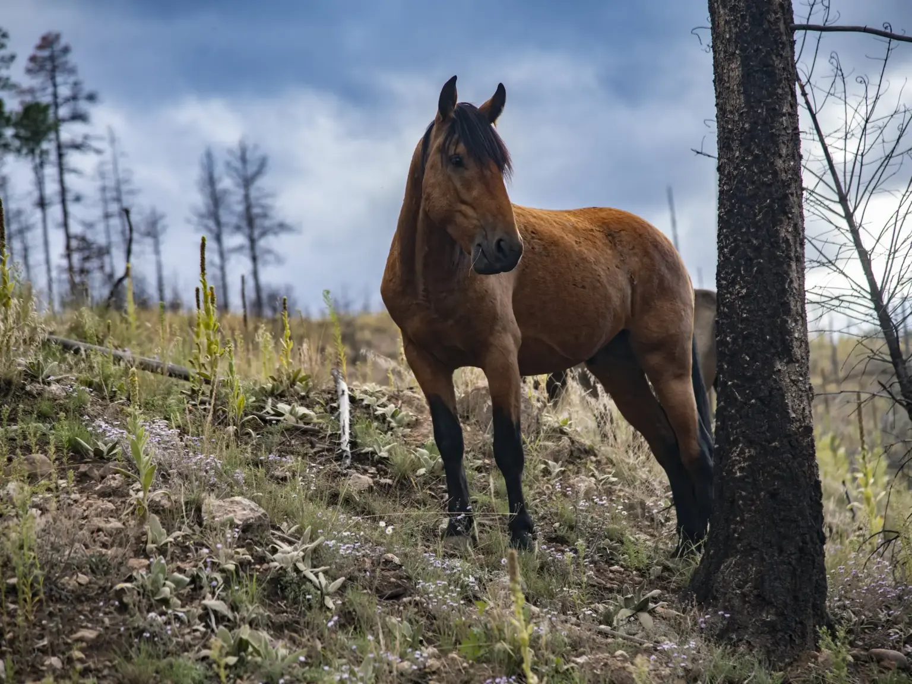
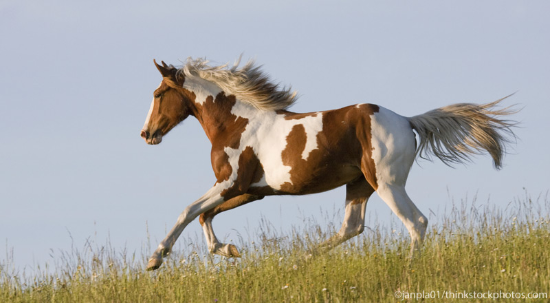
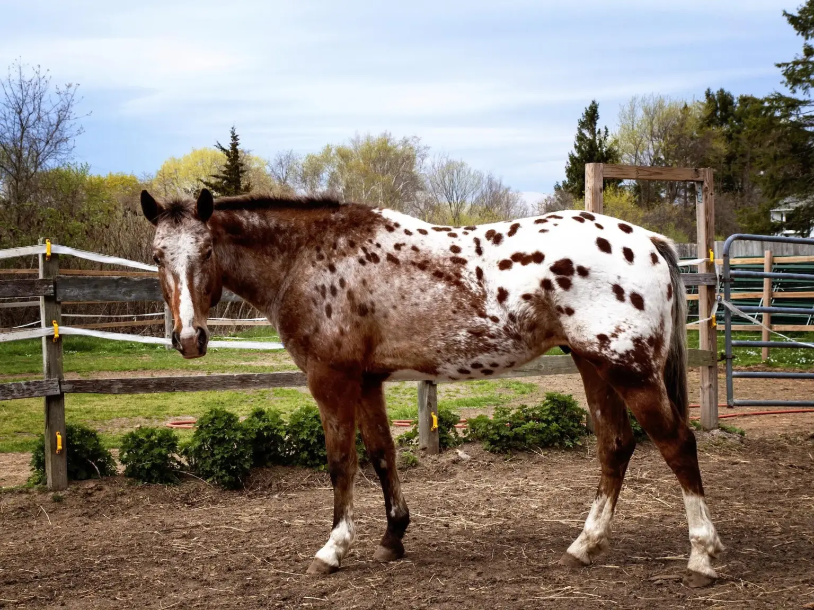

موسوعة سلالات الخيول العالمية
استكشف تاريخ وخصائص سلالات الخيول المذهلة من شتى أنحاء العالم، من سهول الأندلس إلى صحاري شبه الجزيرة العربية
 شبه الجزيرة العربية
شبه الجزيرة العربية
الخيل العربي
تدين كثير من السلالات الحديثة بجزء من جيناتها للخيل العربي. الخيل العربي الجميل والأصيل هو أحد أعرق الأصول التي انبثقت منها سلالات الخيول في العالم.

إنجلتراالخيل الإنجليزي الأصيل
قلّة من السلالات سافرت بقدر ما سافر الخيل الإنجليزي الأصيل على امتداد العالم.

الولايات المتحدةخيل الكوارتر الأمريكي
يُعدّ خيل الكوارتر رمزاً للفروسية الأمريكية وارتبط بأسطورة رعاة البقر في الغرب الأمريكي.
 تركمانستان
تركمانستان
خيل أخال تيكه
يُعرف بمظهره الرشيق وبريق معطفه المعدني اللامع، وهو خيل صُمّم للسرعة.

الولايات المتحدةالخيل المسطنق الأمريكي
يُقال إن المسطنق الأمريكي يرمز إلى حرية الغرب الأمريكي البري، والكلمة مشتقة من الإسبانية «mestena».

الولايات المتحدةخيل الأمريكي المطلي
خيل الأداء ذو الألوان الفريدة، يُربَّى لنمطه البقعي المميز. يُسمح فقط بسلالات الإنجليزي الأصيل أو الكوارتر.
 إسبانيا
إسبانيا
الخيل الأندلسي
يُضاهي الأندلسي الخيلَ العربي في نقاء السلالة وعراقتها، وهو من أجداد سلالات الخيول الحديثة.

الولايات المتحدةخيل الأبالوزا
يُعرف بأنماطه البقعية اللافتة، والأبالوزا سلالة لونية مصنّفة وفق علم الوراثة اللونية.
 اسكتلندا
اسكتلندا
خيل كلايدسديل
يُعدّ فخر اسكتلندا، وهو سلالة جر ثقيلة أصيلة من مقاطعة لانركشير باسكتلندا.
 هولندا
هولندا
خيل الفريزيان
يُعرف أيضاً بـ Friese paard، يتميز الفريزيان بمظهره الأنيق وحركته الرشيقة. مثالي للعروض والميادين.
 النمسا
النمسا
خيل الليبيزانر
يُعرف الليبيزانر بفحوله المؤدية الرائعة من مدرسة الفروسية الإسبانية في فيينا.
 الولايات المتحدة
الولايات المتحدة
خيل المورغان
أول سلالة أمريكية موثّقة، يعود نسب خيل المورغان إلى الفحل الأصلي Figure ومالكه جاستن مورغان.